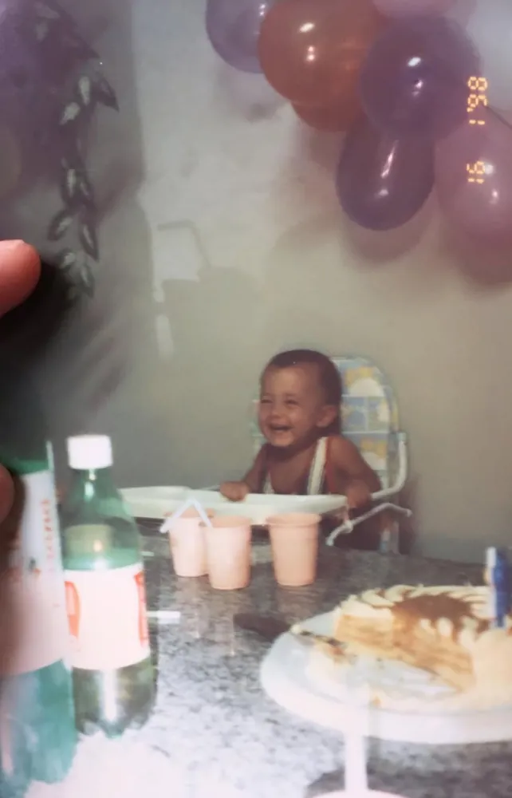
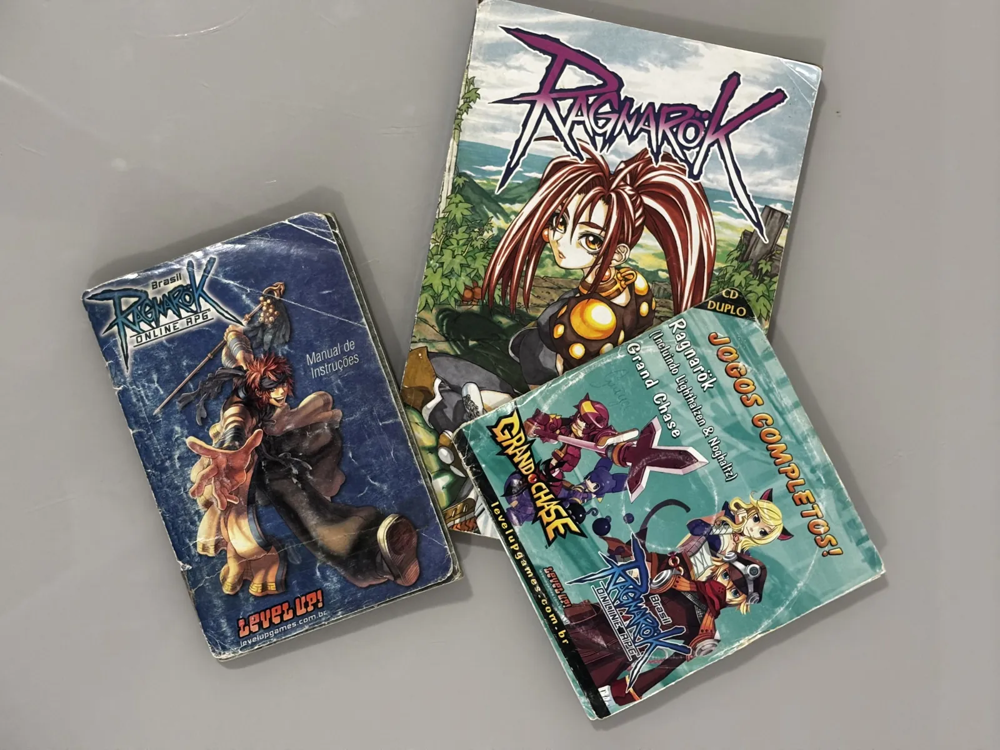

O que me moveWhat drives me
Quero levar pessoas para outros mundos.I want to take people to other worlds.
Tenho o sonho de proporcionar experiências: um app, uma tecnologia inovadora ou um jogo com uma lore tão boa que a pessoa não consegue largar.I dream of creating experiences: an app, an innovative technology or a game with lore so good people can't put it down.
Começou com um CD de RagnarokIt started with a Ragnarok CD

Antes de qualquer linha de código, teve um Game Boy. Depois vieram o PS1, o PS2 e uma pilha de revistas da Level Up! Games que eu colecionava todo mês. Meu sonho de criança era trabalhar lá (sim, eu era aquela criança).Before any line of code, there was a Game Boy. Then came the PS1, the PS2 and a stack of Level Up! Games magazines I collected every month. My childhood dream was to work there (yes, I was that kid).
Aos 7 anos, minha avó me deu um CD de Ragnarok Online. Chamei meu primo pra jogar junto e nunca mais larguei: jogo até hoje. Depois vieram as lan houses de Caruaru e, bem mais tarde, os souls, que me ensinaram a perder com paciência.When I was 7, my grandmother gave me a Ragnarok Online CD. I called my cousin to play with me and never let go: I still play it today. Then came the internet cafés in Caruaru and, much later, the souls games, which taught me to lose patiently.

Por que deixei o DireitoWhy I left law
Quando eu era criança, todo mundo repetia a mesma coisa: tecnologia não dá dinheiro, e trabalhar com jogo, então, nem pensar. Não existia IA, e a tecnologia não era nem de longe o que é hoje.When I was a kid, everyone said the same thing: tech doesn't pay, and working with games was out of the question. There was no AI, and tech was nowhere near what it is today.
Então fui de Direito. O leque era enorme, e a diplomacia parecia um bom caminho pro meu outro sonho, o de morar e trabalhar fora. Me formei, mas cuidar dos problemas da vida dos outros nunca foi o meu propósito.So I went with law. It opened a lot of doors, and diplomacy looked like a good road to my other dream: living and working abroad. I graduated, but dealing with other people's problems was never my purpose.
Direito definitivamente não é pra mim.Law is definitely not for me.
O curioso é que o futuro que eu imaginava quando criança virou exatamente o presente, e quem dizia que não dava quebrou a cara. Era pra ter seguido a minha intuição desde o começo. Mas tudo bem: no fim de 2023 comecei a programar, e agora estou do lado certo da tela.The funny thing is that the future I imagined as a kid turned out to be exactly the present, and everyone who said it wouldn't work was proven wrong. I should have followed my gut from the start. But that's fine: in late 2023 I started programming, and now I'm on the right side of the screen.
O que me fascinaWhat fascinates me
Eu não consigo só jogar. Fico reparando em como aquilo foi feito: o sistema por trás, a física, o som, o cenário. E o que mais me toca é ver um jogo lindo rodando liso num computador fraco. Alguém sentou e otimizou aquilo pra que mais gente pudesse jogar. Pra mim, isso é carinho.I can't just play. I keep noticing how it was made: the system behind it, the physics, the sound, the scenery. And what touches me most is seeing a beautiful game run smoothly on a weak computer. Someone sat down and optimized it so more people could play. To me, that's care.
É por isso que eu admiro tanto quem desenvolve jogos com esse cuidado, tratando o jogador como gente e não como carteira. Ter um jogo meu na Steam um dia é um sonho.That's why I admire game developers who work with that kind of care, treating players like people, not wallets. Having a game of mine on Steam one day is a dream.
Com IA é a mesma coisa. Eu amo quando ela ajuda a criar, desde que não apague o carinho que quem desenvolve coloca no coração de cada ideia.It's the same with AI. I love it when it helps people create, as long as it doesn't erase the care developers put into the heart of every idea.
FechamentoClosing
Isso é um pouco de tudo o que eu sou.This is a little of everything I am.